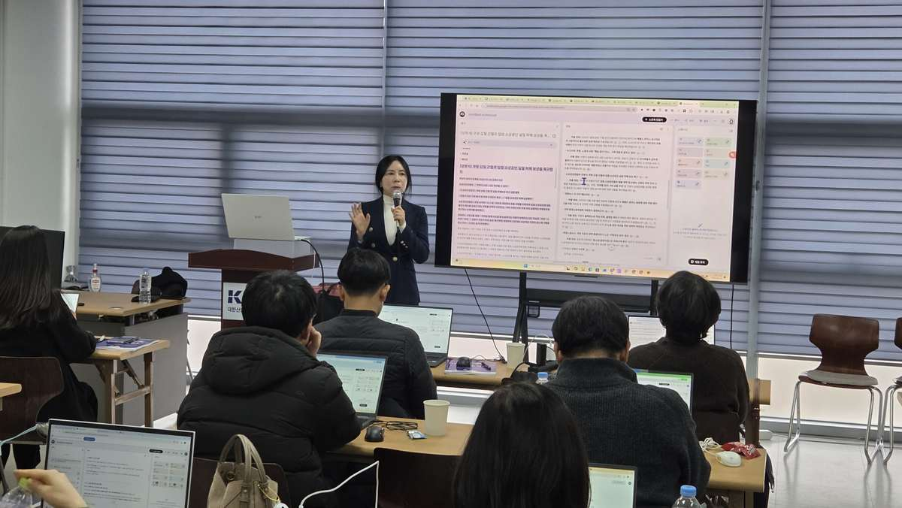

AI 에이전트 교육
기업 임직원과 공무원이 자료 조사·정리·보고처럼 여러 단계로 이루어진 업무를 AI 에이전트에게 맡기고, 결과를 검수해 업무에 쓰는 방법을 실습하는 교육입니다.

생성형 AI 기초 교육을 마친 기업·공공기관 실무자와 중간관리자, AX 추진팀, 자료 조사·정리·보고 업무가 많은 부서
6시간 집중과정 · 1~2일 랩 · 업무과제 프로젝트형
AI 에이전트란 무엇인가요?
AI 에이전트는 목표를 받으면 스스로 단계를 나누어 자료를 찾고, 정리하고, 결과물을 만드는 AI 활용 방식입니다. 사람은 목표와 기준을 정하고 결과를 검수합니다.
| 구분 | 대화형 AI 활용 | AI 에이전트 활용 |
|---|---|---|
| 일하는 방식 | 질문 1번 → 답변 1번 | 목표 제시 → AI가 단계별로 조사·정리·작성 |
| 사람의 역할 | 매번 질문하고 결과를 이어 붙임 | 지시서와 검수 기준을 정하고 결과를 확인 |
| 적합한 업무 | 문장 다듬기, 요약, 아이디어 | 동향 조사 보고서, 주간보고 취합, 회의 후속 조치 |
| 핵심 역량 | 프롬프트 작성 | 업무 분해 · 컨텍스트 설계 · 결과 검수 |
실제 업무로 실습합니다
도구 기능을 따라 하는 데서 끝내지 않고 참여자의 업무를 AI에게 실제로 맡겨 봅니다.
- 내 업무를 단계로 나누고 반복업무와 판단업무 구분하기
- 목적·참고자료·결과 형식·검수 기준을 담은 업무 지시서 작성(컨텍스트 엔지니어링)
- ChatGPT·Gemini·Claude의 자동 실행 기능과 NotebookLM 자료 기반 분석으로 업무 위임 실습
- AI 결과의 오류·출처·보안 점검과 사람이 책임질 범위 정하기
- 잘 작동한 지시서를 팀 공용 템플릿으로 정리하기
이런 업무에 적용합니다
주간보고 취합과 초안 작성
팀원 업무 메모를 모아 정해진 양식의 주간보고 초안을 만들고, 담당자가 확인만 합니다.
정책·시장 동향 조사 보고서
조사 범위와 출처 기준을 정해 주면 AI가 자료를 찾고 비교해 보고서 초안을 정리합니다.
회의 후속 조치 정리
회의록에서 결정사항과 담당자별 할 일을 뽑고, 공유용 안내문 초안까지 이어서 만듭니다.
민원·문의 유형 분류
비식별 처리한 문의를 유형별로 분류하고 답변 초안을 만든 뒤 담당자가 검토합니다.
교육 후 남는 결과물
내 업무용 AI 위임 지시서 3종
교육 시간 안에 직접 만들고, 교육 후 현업에서 이어서 활용합니다.
AI 결과 검수 체크리스트
사실·출처·보안·책임 범위를 확인하는 기준을 정리합니다.
업무 위임 판단표
AI에게 맡길 업무와 사람이 해야 할 업무를 구분하는 기준을 만듭니다.
부서 공용 지시서·참고자료 템플릿
잘 작동한 지시서를 팀이 함께 쓰는 템플릿으로 정리합니다.
담당자와 함께 맞춤 설계합니다
사전 확인
대상·업무·수준·보안환경 확인
과정 설계
시간·난이도·실습과제 구성
현업 실습
실제 업무와 유사한 자료로 수행
적용 지원
결과물·가이드·후속과정 제안
교육담당자가 자주 묻는 질문
AI 에이전트 교육에서는 무엇을 배우나요?
질문하고 답을 받는 사용법을 넘어, 여러 단계로 이루어진 업무를 AI에게 맡기는 방법을 배웁니다. 업무를 단계로 나누고, 목적·참고자료·결과 형식·검수 기준을 담은 지시서를 쓰고, AI 결과를 사람이 확인하는 지점을 정하는 것이 핵심입니다.
일반 ChatGPT 활용 교육과 무엇이 다른가요?
일반 활용 교육이 한 번의 질문으로 좋은 답을 얻는 방법에 집중한다면, 에이전트 교육은 조사→정리→초안 작성→검수처럼 이어지는 업무 전체를 AI에게 위임하고 관리하는 방법에 집중합니다. 생성형 AI 기초 교육을 마친 분께 권장합니다.
코딩을 몰라도 참여할 수 있나요?
가능합니다. 지시서 작성과 도구의 자동 실행 기능을 활용하는 방식이라 코딩 지식이 필요하지 않습니다. 반복업무 도구를 직접 만들고 싶다면 바이브코딩 교육을 함께 구성할 수 있습니다.
관련 과정은 바이브코딩 업무자동화 교육에서 확인하실 수 있습니다.
공공기관의 보안 환경에서도 에이전트 교육이 가능한가요?
가능합니다. 기관이 승인한 도구와 보안지침을 먼저 확인하고, 개인정보·비공개 자료를 제외한 공개자료나 교육용 예시자료로 실습합니다. AI 결과의 출처 확인과 담당자 책임 범위도 함께 다룹니다.
관련 원칙은 공공기관 생성형 AI 보안 원칙에서 확인하실 수 있습니다.
어떤 AI 도구를 사용하나요?
ChatGPT·Gemini·Claude의 자동 실행·조사 기능과 NotebookLM의 자료 기반 분석을 활용합니다. 조직에서 이미 도입한 도구가 있으면 그 도구를 중심으로 구성합니다.
교육 시간은 어떻게 구성하나요?
6시간 집중과정 또는 1~2일 랩으로 운영하며, 조직의 업무과제를 가져와 실제로 위임해 보는 프로젝트형 과정으로도 확장할 수 있습니다. 대상 수준과 사용 가능한 도구를 확인한 뒤 제안합니다.
우리 조직에 맞는 교육안이 필요하신가요?
기관명, 교육대상, 인원, 희망일정과 해결하고 싶은 업무를 알려주시면 과정과 운영방향을 제안해 드립니다.